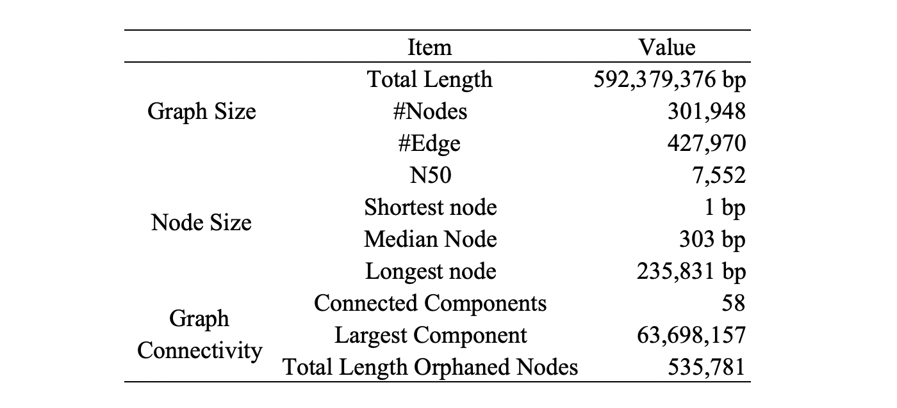

Data
[Last update: Thu July 30 2022, Dr. Yong Zhou]
IMPORTANT: This page shows all Magic16 genome assemblies, annotations and natural variants (PAV, INV, SNPs, InDels) of O. sativa. The corresponding data were released on June 30, 2022, last update.
Genome Building
The genomes were sequenced by >100x PacBio sequencing reads and assembled using standard PacBio genome assembly and GPM pipeline with Quiver polishing. We also performed >100x Illumina paired-end sequencing to further correct remaining sequencing errors by Pilon (Version2). After manual curation by GPM, the final assemblies reached chromsome-equivalent completeness. Based on each assembly, we conducted full-fledged annotation for various genomic features, such as centromeres, tolemeres, protein-coding genes, retrotransposable elements.
Data avaliable
Here, we provide all the assembly and annotation files as follows. The assembly files are in FASTA format. The annotation files are in GFF format.
Whole Genomes Metadata
| Variety Name/Accession ID | Speicies/genome | Subpopulation | Genome Assembly (NCBI) | Annotation (gramene) |
|---|---|---|---|---|
| IRGSP-1.0/NIPPONBARE | O. sativa-AA (Asian rice) | GJ-temp | GCA_001433935.1 | oryza_sativa_core_4_87_7.gff ensemblgenomes/release-48 |
| CHAO MEO::IRGC 80273-1 | O. sativa-AA (Asian rice) | GJ-subtrp | GCA_009831315.1 | oryza_sativa132278_core_4_87_1.gff |
| Azucena | O. sativa-AA (Asian rice) | GJ-trop1 | GCA_009830595.1 | oryza_sativaazucena_core_4_87_1.gff |
| KETAN NANGKA::IRGC 19961-2 | O. sativa-AA (Asian rice) | GJ-trop2 | GCA_009831275.1 | oryza_sativa128077_core_4_87_1.gff |
| ARC 10497::IRGC 12485-1 | O. sativa-AA (Asian rice) | cB | GCA_009831255.1 | oryza_sativa117425_core_4_87_1.gff |
| PR 106::IRGC 53418-1 | O. sativa-AA (Asian rice) | XI-1B2 | GCA_009831045.1 | oryza_sativa127742_core_4_87_1.gff |
| Minghui 63 | O. sativa-AA (Asian rice) | XI-adm | MH63RS2 MH63RS3 | oryza_sativamh63.RS3_core_4_87_1.gff |
| IR 64 | O. sativa-AA (Asian rice) | XI-1B1 | GCA_009831315.1 | oryza_sativair64_core_4_87_1.gff |
| Zhenshan 97 | O. sativa-AA (Asian rice) | GJ-subtrp | ZS97RS2 ZS97RS3 | oryza_sativazs97.RS3_core_4_87_1.gff |
| LIMA::IRGC 81487-1 | O. sativa-AA (Asian rice) | XI-3A | GCA_009829395.1 | oryza_sativa127564_core_4_87_1.gff |
| KHAO YAI GUANG::IRGC 65972-1 | O. sativa-AA (Asian rice) | XI-3B1 | GCA_009831295.1 | oryza_sativa127518_core_4_87_1.gff |
| GOBOL SAIL (BALAM)::IRGC 26624-2 | O. sativa-AA (Asian rice) | XI-2A | GCA_009831025.1 | oryza_sativa132424_core_4_87_1.gff |
| LIU XU::IRGC 109232-1 | O. sativa-AA (Asian rice) | XI-3B2 | GCA_009829375.1 | oryza_sativa125827_core_4_87_1.gff |
| LARHA MUGAD::IRGC 52339-1 | O. sativa-AA (Asian rice) | XI-2B | GCA_009831355.1 | oryza_sativa125619_core_4_87_1.gff |
| N22 (N 22::IRGC 19379-1) | O. sativa-AA (Asian rice) | cA1 | GCA_001952365.2 | oryza_aus_core_3_87_2.gff |
| NATEL BORO::IRGC 34749-1 | O. sativa-AA (Asian rice) | cA2 | GCA_009831335.1 | oryza_sativa127652_core_4_87_1.gff |
| O. rufipogon PNG91-7::IRGC 106523-1 | O. rufipogon-AA (Asian rice progenitor) | - | GCA_009831335.1 | CHSL |
| O. punctataIRGC 105690 | O. punctata-BB (Outgroup) | - | GCA_000573905.2 | CHSL |
Whole Genomes Metadata
| Transcriptome | NCBI/BioProject | NCBI/BioSample | NCBI/Sequence Read Archive (SRA) | Publication |
|---|---|---|---|---|
| Iso-Seq | PRJNA760839 | SAMN21236499-SAMN21236518 | SRR15851177-SRR15851215 | Zhou et al., 2022, preprint |
| RNA-Seq | PRJNA659864 | SAMN15929528-SAMN15929547 | SRR12545183-SRR12545735 | Zhou et al., 2022, preprint |
Pangenome Graphs
| Pangenome Graphs Names | Backbone Genome | Constitute Genomes | Construction methods | Publications |
|---|---|---|---|---|
| RPRP.M16.Pangenome.Graph.Version1 | IRGSP-1.0/Nipponbare | 16 O. sativa genomes from Whole Genomes Metadata | minigraph | Zhou et al., 2022, preprint |
Pangenome Graphs *.gfa, *.fa and chusum files are avaliable. Password: N9ggtr%61KJD
Pangenome Graphs stats

Raw Reads Accession
The PacBio sequencing reads for this project has been deposed in the National Center for Biotechnology Information (NCBI). All the BioProjects, BioSamples, SRA could be find from Table 3 of our paper "A platinum standard pan-genome resource that represents the population structure of Asian rice".